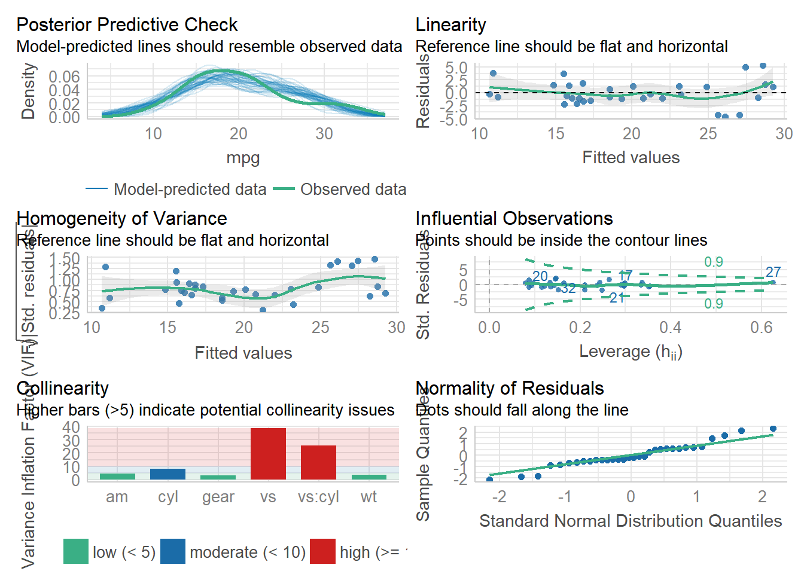
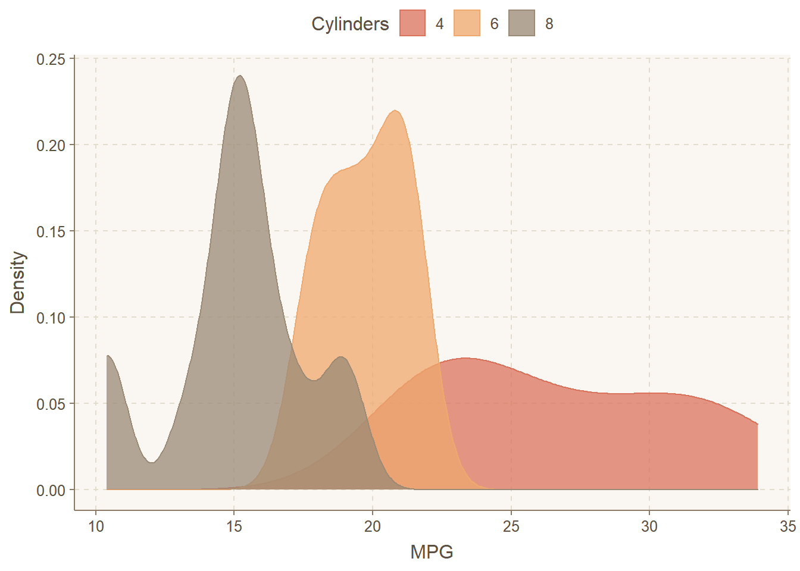
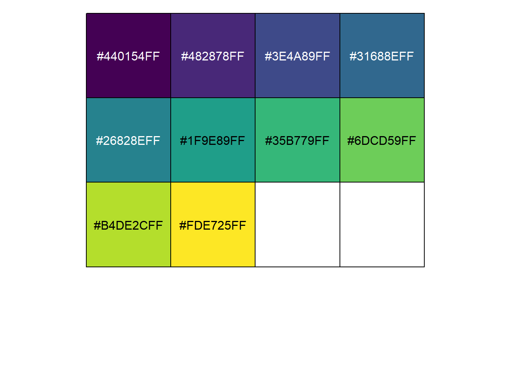

A 附录-有趣的“懒人”包
A.1 自动生成正则表达式
# remotes::install_github("daranzolin/inferregex")
library(inferregex)
s <- "abcd-9999-ab9"
infer_regex(s)[1,2]## [1] "^[a-z]{4}-\\d{4}-[a-z]{2}\\d$"A.2 janitor包
janitor has simple little tools for examining and cleaning dirty data.
A.2.1 整理列名
library(tidyverse)## -- Attaching packages ---------------------------- tidyverse 1.3.1 --## v ggplot2 3.3.5 v purrr 0.3.4
## v tibble 3.1.6 v dplyr 1.0.8
## v tidyr 1.2.0 v stringr 1.4.0
## v readr 2.1.2 v forcats 0.5.1## -- Conflicts ------------------------------- tidyverse_conflicts() --
## x dplyr::filter() masks stats::filter()
## x dplyr::lag() masks stats::lag()library(janitor)##
## 载入程辑包：'janitor'## The following objects are masked from 'package:stats':
##
## chisq.test, fisher.testfake_raw <- tibble::tribble(
~id, ~`count/num`, ~W.t, ~Case, ~`time--d`, ~`%percent`,
1L, "china", 3L, "w", 5L, 25L,
2L, "us", 4L, "f", 6L, 34L,
3L, "india", 5L, "q", 8L, 78L
)
fake_raw## # A tibble: 3 x 6
## id `count/num` W.t Case `time--d` `%percent`
## <int> <chr> <int> <chr> <int> <int>
## 1 1 china 3 w 5 25
## 2 2 us 4 f 6 34
## 3 3 india 5 q 8 78fake_raw %>%
janitor::clean_names()## Warning in FUN(X[[i]], ...): strings not representable in native
## encoding will be translated to UTF-8## Warning in FUN(X[[i]], ...): unable to translate '<U+00C4>' to native
## encoding## Warning in FUN(X[[i]], ...): unable to translate '<U+00D6>' to native
## encoding## Warning in FUN(X[[i]], ...): unable to translate '<U+00E4>' to native
## encoding## Warning in FUN(X[[i]], ...): unable to translate '<U+00F6>' to native
## encoding## Warning in FUN(X[[i]], ...): unable to translate '<U+00DF>' to native
## encoding## Warning in FUN(X[[i]], ...): unable to translate '<U+00C6>' to native
## encoding## Warning in FUN(X[[i]], ...): unable to translate '<U+00E6>' to native
## encoding## Warning in FUN(X[[i]], ...): unable to translate '<U+00D8>' to native
## encoding## Warning in FUN(X[[i]], ...): unable to translate '<U+00F8>' to native
## encoding## Warning in FUN(X[[i]], ...): unable to translate '<U+00C5>' to native
## encoding## Warning in FUN(X[[i]], ...): unable to translate '<U+00E5>' to native
## encoding## # A tibble: 3 x 6
## id count_num w_t case time_d percent_percent
## <int> <chr> <int> <chr> <int> <int>
## 1 1 china 3 w 5 25
## 2 2 us 4 f 6 34
## 3 3 india 5 q 8 78A.2.2 统计分析
mtcars %>%
janitor::tabyl(cyl)## cyl n percent
## 4 11 0.34375
## 6 7 0.21875
## 8 14 0.43750A.2.3 查看指定列有重复的行
df <- tribble(
~id, ~date, ~store_id, ~sales,
1, "2020-03-01", 1, 100,
2, "2020-03-01", 2, 100,
3, "2020-03-01", 3, 150,
4, "2020-03-02", 1, 110,
5, "2020-03-02", 3, 101
)
df## # A tibble: 5 x 4
## id date store_id sales
## <dbl> <chr> <dbl> <dbl>
## 1 1 2020-03-01 1 100
## 2 2 2020-03-01 2 100
## 3 3 2020-03-01 3 150
## 4 4 2020-03-02 1 110
## 5 5 2020-03-02 3 101df %>%
janitor::get_dupes(store_id)## # A tibble: 4 x 5
## store_id dupe_count id date sales
## <dbl> <int> <dbl> <chr> <dbl>
## 1 1 2 1 2020-03-01 100
## 2 1 2 4 2020-03-02 110
## 3 3 2 3 2020-03-01 150
## 4 3 2 5 2020-03-02 101A.3 自动生成模型公式
# remotes::install_github("datalorax/equatiomatic")
library(equatiomatic)
mod1 <- lm(mpg ~ cyl + disp, mtcars)
extract_eq(mod1)\[ \operatorname{mpg} = \alpha + \beta_{1}(\operatorname{cyl}) + \beta_{2}(\operatorname{disp}) + \epsilon \]
\[ \operatorname{mpg} = \alpha + \beta_{1}(\operatorname{cyl}) + \beta_{2}(\operatorname{disp}) + \epsilon \]
A.4 自动生成论文报告
library(report)
model <- lm(Sepal.Length ~ Species, data = iris)
report(model)## Registered S3 method overwritten by 'parameters':
## method from
## format.parameters_distribution datawizard## We fitted a linear model (estimated using OLS) to predict Sepal.Length with Species (formula: Sepal.Length ~ Species). The model explains a statistically significant and substantial proportion of variance (R2 = 0.62, F(2, 147) = 119.26, p < .001, adj. R2 = 0.61). The model's intercept, corresponding to Species = setosa, is at 5.01 (95% CI [4.86, 5.15], t(147) = 68.76, p < .001). Within this model:
##
## - The effect of Species [versicolor] is statistically significant and positive (beta = 0.93, 95% CI [0.73, 1.13], t(147) = 9.03, p < .001; Std. beta = 1.12, 95% CI [0.88, 1.37])
## - The effect of Species [virginica] is statistically significant and positive (beta = 1.58, 95% CI [1.38, 1.79], t(147) = 15.37, p < .001; Std. beta = 1.91, 95% CI [1.66, 2.16])
##
## Standardized parameters were obtained by fitting the model on a standardized version of the dataset. 95% Confidence Intervals (CIs) and p-values were computed using the Wald approximation.A.5 自动评估模型
library(performance)
# defining a model
model <- lm(mpg ~ wt + am + gear + vs * cyl, data = mtcars)
# checking model assumptions
check_model(model) # 注意生成图片时的窗口不能过小
A.6 自动生成统计表格
library(gtsummary)
# 生成的表格可以直接复制进论文即可
gtsummary::trial %>%
dplyr::select(trt, age, grade, response) %>%
gtsummary::tbl_summary(
by = trt,
missing = "no"
) %>%
gtsummary::add_p() %>%
gtsummary::add_overall() %>%
gtsummary::add_n() %>%
gtsummary::bold_labels()| Characteristic | N | Overall, N = 2001 | Drug A, N = 981 | Drug B, N = 1021 | p-value2 |
|---|---|---|---|---|---|
| Age | 189 | 47 (38, 57) | 46 (37, 59) | 48 (39, 56) | 0.7 |
| Grade | 200 | 0.9 | |||
| I | 68 (34%) | 35 (36%) | 33 (32%) | ||
| II | 68 (34%) | 32 (33%) | 36 (35%) | ||
| III | 64 (32%) | 31 (32%) | 33 (32%) | ||
| Tumor Response | 193 | 61 (32%) | 28 (29%) | 33 (34%) | 0.5 |
| 1 Median (IQR); n (%) | |||||
| 2 Wilcoxon rank sum test; Pearson's Chi-squared test | |||||
# 生成的表格可以直接复制进论文即可
t1 <-
glm(response ~ trt + age + grade, trial, family = binomial) %>%
gtsummary::tbl_regression(exponentiate = TRUE)
t2 <-
survival::coxph(survival::Surv(ttdeath, death) ~ trt + grade + age, trial) %>%
gtsummary::tbl_regression(exponentiate = TRUE)
gtsummary::tbl_merge(
tbls = list(t1, t2),
tab_spanner = c("**Tumor Response**", "**Time to Death**")
)| Characteristic | Tumor Response | Time to Death | ||||
|---|---|---|---|---|---|---|
| OR1 | 95% CI1 | p-value | HR1 | 95% CI1 | p-value | |
| Chemotherapy Treatment | ||||||
| Drug A | — | — | — | — | ||
| Drug B | 1.13 | 0.60, 2.13 | 0.7 | 1.30 | 0.88, 1.92 | 0.2 |
| Age | 1.02 | 1.00, 1.04 | 0.10 | 1.01 | 0.99, 1.02 | 0.3 |
| Grade | ||||||
| I | — | — | — | — | ||
| II | 0.85 | 0.39, 1.85 | 0.7 | 1.21 | 0.73, 1.99 | 0.5 |
| III | 1.01 | 0.47, 2.15 | >0.9 | 1.79 | 1.12, 2.86 | 0.014 |
| 1 OR = Odds Ratio, CI = Confidence Interval, HR = Hazard Ratio | ||||||
A.7 把统计结果写在图上
library(statsExpressions)
library(ggplot2)
ggplot(mtcars, aes(x = mpg, y = wt)) +
geom_point() +
geom_smooth(method = "lm") +
labs(
title = "Spearman's rank correlation coefficient",
subtitle = expr_corr_test(mtcars, mpg, wt, type = "nonparametric")
)A.8 画图配色
A.8.1 第三方主题-ggthem
# devtools::install_github('cttobin/ggthemr')
library(tidyverse)
library(ggthemr)
ggthemr("dust")
mtcars %>%
mutate(cyl = factor(cyl)) %>%
ggplot(aes(x = mpg, fill = cyl, color = cyl)) +
geom_density(alpha = 0.75) +
labs(fill = "Cylinders", color = "Cylinders",
x = "MPG", y = "Density") +
legend_top()
ggthemr_reset() # 重置为默认主题A.8.2 画图颜色-scales
library(scales)##
## 载入程辑包：'scales'## The following object is masked from 'package:purrr':
##
## discard## The following object is masked from 'package:readr':
##
## col_factorshow_col(viridis_pal()(10))
推荐适用专业的配色网站 colorbrewer先看看颜色，再选择。